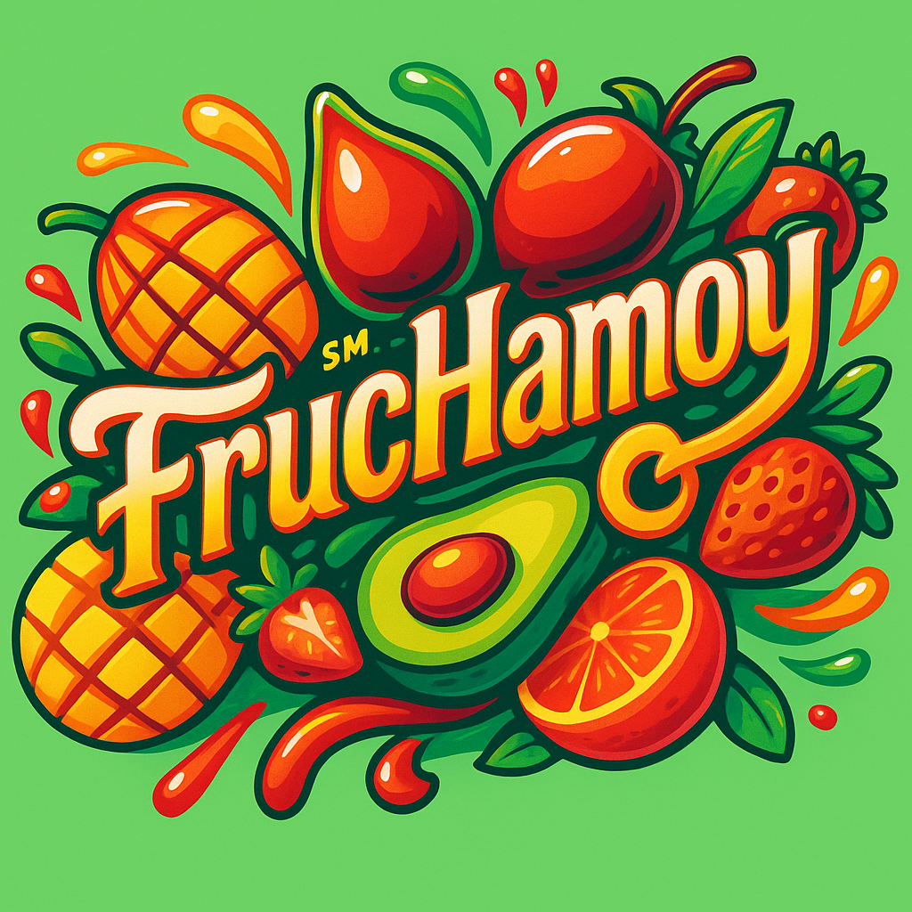

¿Quiénes somos?
Fruchamoy es una microempresa que nació con la idea de crear un chamoy diferente, usando frutas naturales como mango, fresa y tamarindo.
Nos enfocamos en ofrecer un sabor único: dulce, picosito y 100% artesanal, sin colorantes ni conservadores artificiales.
Somos jóvenes emprendedores que creemos en los productos hechos con amor y dedicación.
Nuestro objetivo es que cada persona que pruebe Fruchamoy sienta el sabor auténtico de la fruta y el toque picosito que tanto nos gusta en México.
Gracias por apoyar productos locales y naturales.
